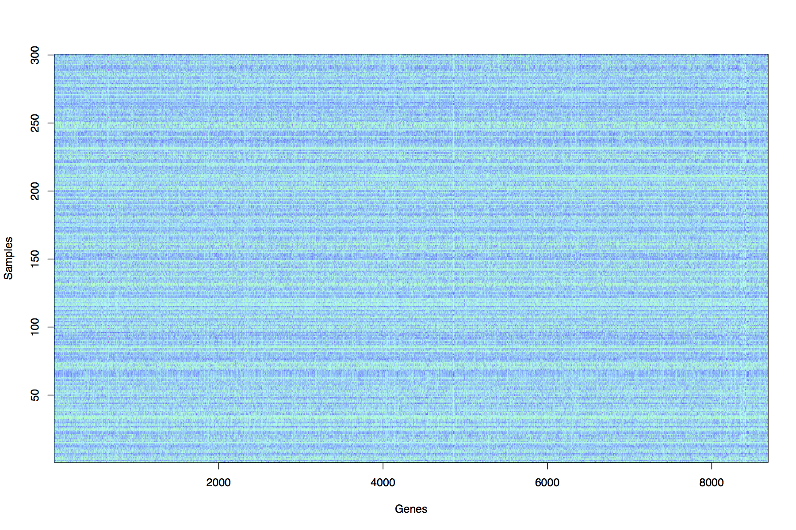

Prelims Data Analysis
TT 2019
Course lecturer: Prof Dino Sejdinovic. The course and all course materials were designed by Prof Jonathan Marchini.
The course synopsis
The aim of the Data Analysis course
is to introduce students to the theory and practice of
unsupervised learning.
Unsupervised learning can be described as finding structure in
datasets, and has applications in many areas such as finance,
retail, medical imaging, sports performance analysis, genetics,
medicine, studies of the environment and social networks.
Unsupervised learning methods are important parts of
Computational Statistics,
Machine Learning,
Artificial Intelligence, and
Big Data.
Motivating
example

|
3D
Projection and clustering : The method of Principal
Components Analysis (PCA) has been applied to the dataset
in order to uncover structure. A clustering method
(k-means) has then been applied to group observations in
distinct groupings or clusters.
Students will learn the theory and practical skills to
reproduce this analysis.
|
Course notes, Lectures and
Exercise Sheets
Course
notes, lecture slides and exercise sheets will be available here.
Optional
exercises in R
Each exercise sheet will
contain a mix of written and optional questions using R.
It is up to each college tutor to decide whether students should
attempt these questions, but it is strongly recommended,
as these questions will help with understanding of the theory.
Modern statistics is pervasive in the era of "Big Data". The
majority of Maths graduates will go on to careers that involve
some use of data, so a firm practical grounding in statistical
analysis is highly valuable. An aim of this course is to get
students started on being able to independently carry out
statistical data analysis.
As many student will not have worked with R, here is a short
tutorial document that will introduce R, show students how to
install R and get started with some basics.
R_intro.pdf
Future
Courses
This course leads onto
several more advanced courses in future years that students
should consider if they wish to learn more about Statistical
Data Analysis, Machine Learning, Big Data and Artificial
Intelligence.
Book
The following book gives
a good overview of the methods covered in this course
This book is freely available online here http://www-bcf.usc.edu/~gareth/ISL/
G. James, D. Witten, T. Hastie, R. Tibshirani An Introduction to
Statistical Learning (with
Applications in R) (Springer 2013)
Chapter 10 covers unsupervised learning.